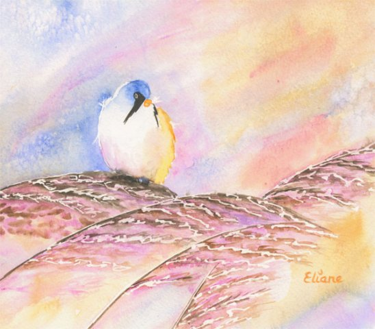

Il y a une quinzaine d’années maintenant, j’ai acheté quelques godets d’aquarelle, « pour essayer ».
D’années en années, le passe-temps est devenu passion. Mes thèmes sont variés, les formats très divers, avec une certaine prédilection pour les grandes tailles. Voici donc un aperçu, des débuts, façon "coloriages", aux nouveautés de ces derniers mois.
D’autre part, les liens favoris vous donneront aussi accès à des sites d’aquarellistes connus ou moins connus, que j’apprécie particulièrement.
Bonne visite !
Eliane